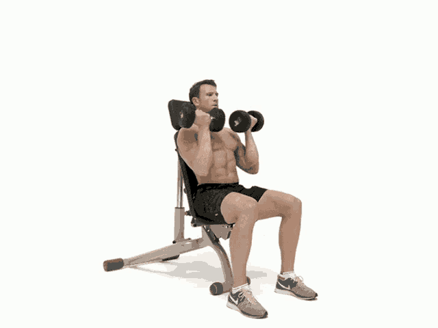

Close-Grip Bench

The close-grip bench press is a strength exercise targeting the triceps, chest, and shoulders, performed by pressing a barbell upward with hands shoulder-width apart or closer. To start, lower the barbell to your mid-chest with elbows tucked in, then press it back up focusing on chest engagement.
Front Squat

To perform the front squat, stand with feet shoulder-width apart, hold the barbell on your front shoulders with elbows high, and lower into a squat until your thighs are parallel to the ground. Keep your chest up and core tight, then drive through your heels to return to standing.
Dumbell Row

To perform a dumbbell row, bend at the waist with a dumbbell in one hand, keeping your back straight and your knee and hand on a bench for support. Pull the dumbbell toward your hip, squeezing your shoulder blade, then lower it back down with control.
Arnold Shoulder Press

To perform an Arnold shoulder press, start seated with a dumbbell in each hand, palms facing your shoulders. Press the dumbbells overhead while rotating your palms outward, then reverse the motion to return to the starting position.